Suhas Suresha
I build ML systems that have real-world impact. Currently, I'm a Senior Machine Learning Engineer at Adobe, working on the Search, Discovery, and Content AI platform, the system behind search and recommendations across Adobe Express, Firefly, and Creative Cloud. Most recently, I worked on building the search subagent for the Adobe Express AI Assistant, which helps millions of users find and create content through natural language.
I'm also the author of Designing AI Systems: A Guide to Production-Ready Platforms, published by Manning. Before Adobe, I co-founded QALY, a heart health app that uses ML to analyze ECGs from smartwatches, now with over 100,000 users and 500,000+ ECGs analyzed. Before that, I was a Senior Data Scientist at SLB, where my ML research led to four granted U.S. patents and three peer-reviewed publications. I studied Computational and Applied Mathematics at Stanford (M.S., ICME) and did my undergrad at IIT Madras.
Book
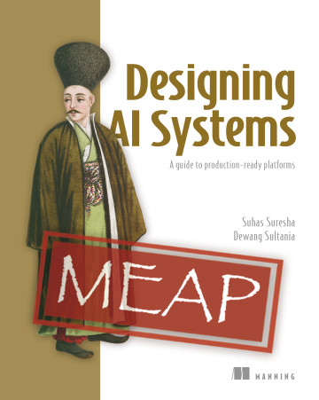
Publications
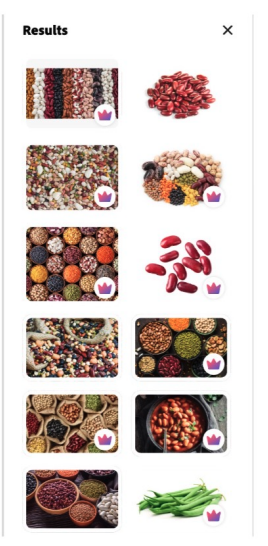
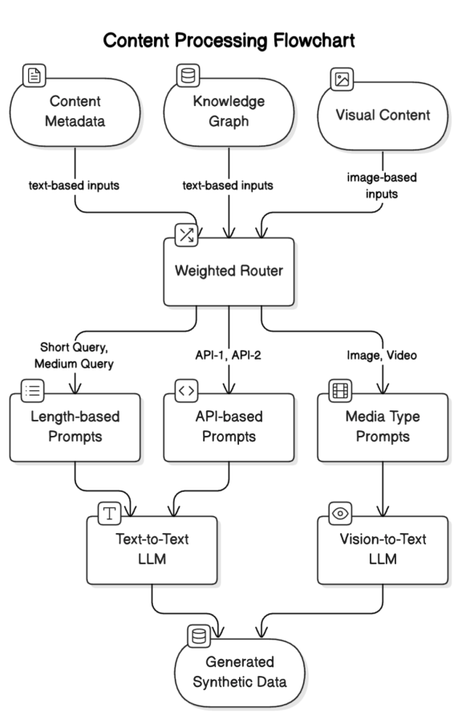
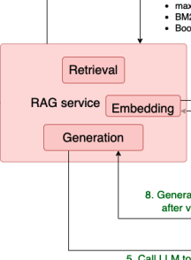
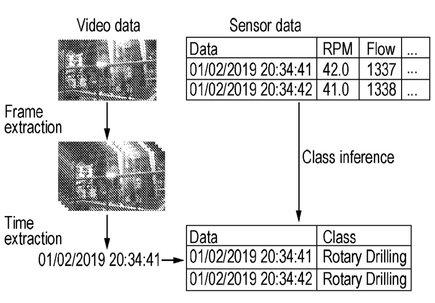
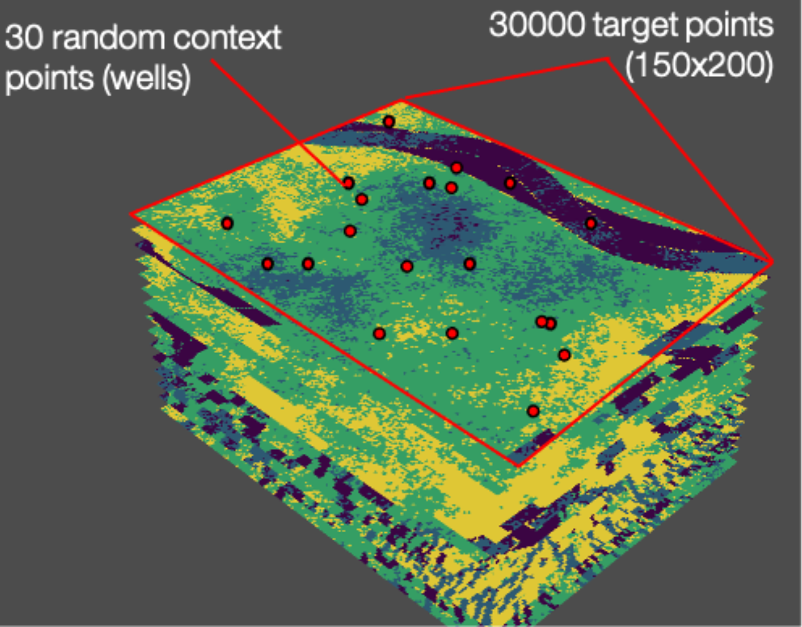
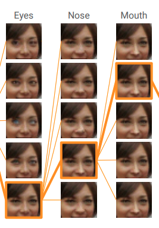
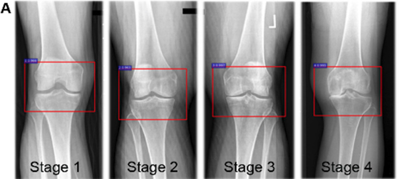
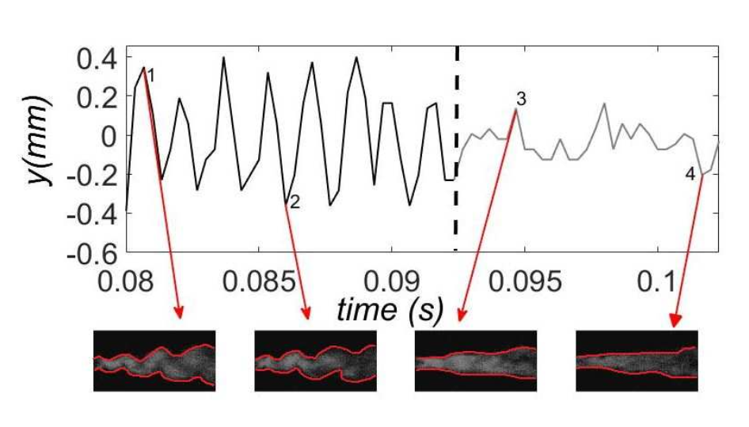
Patents
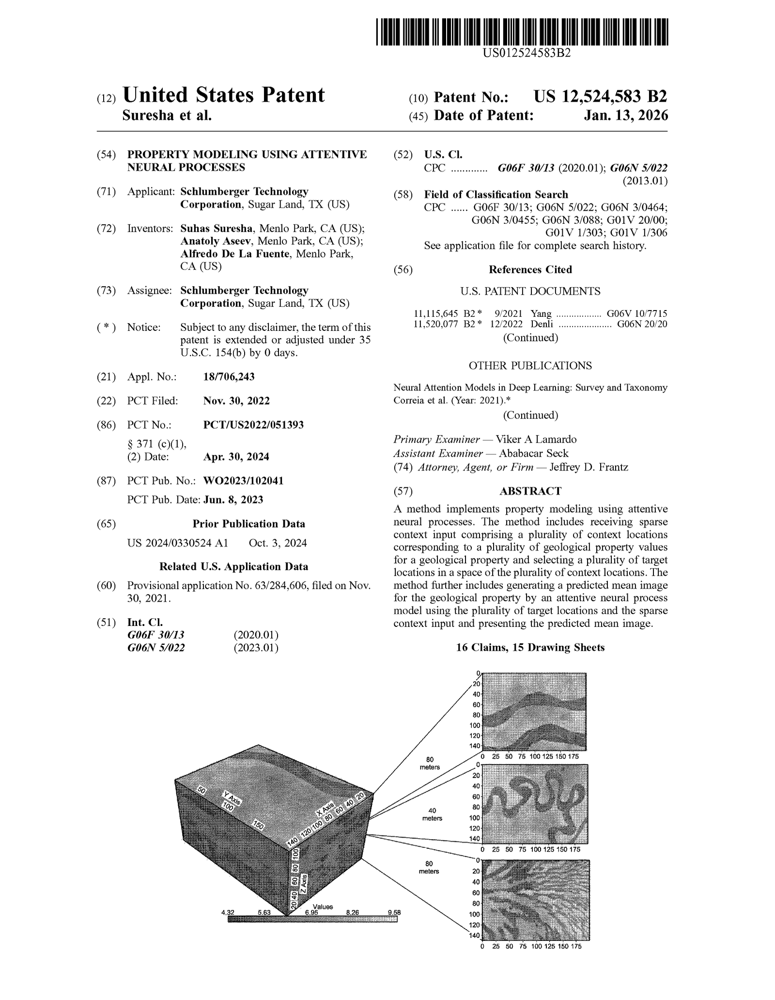
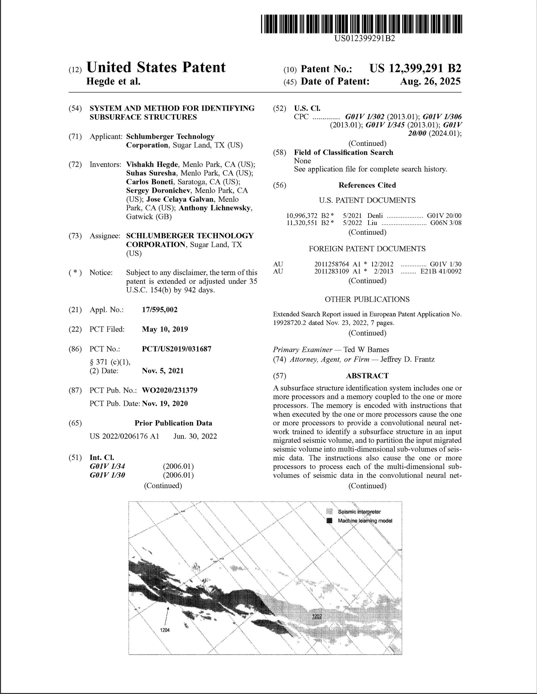
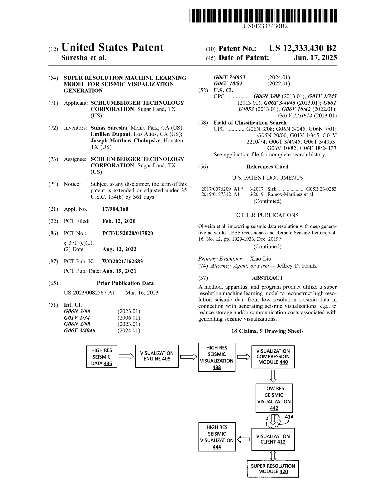
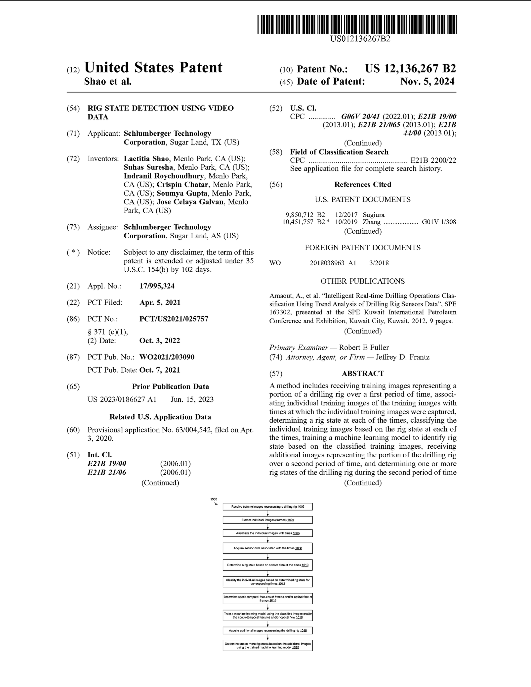
QALY is a heart health app I co-founded to help people monitor cardiac arrhythmias using smartwatch ECGs. I built the ML pipeline that detects PQRST intervals and heart arrhythmias in real time from ECG waveforms. Over 100,000 people use it today. The app has helped users detect previously undiagnosed cardiac conditions, including cases of SVT and atrial fibrillation that were missed during years of in-person medical visits.


- 100K+ users across iOS and Android
- 500K+ ECGs analyzed
- #1 rated app for managing AFib (Everyday Health)
Education
-
 M.S. in Computational and Applied Mathematics (ICME)
M.S. in Computational and Applied Mathematics (ICME) -
 B.Tech and M.Tech in Aerospace Engineering
B.Tech and M.Tech in Aerospace Engineering